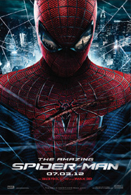
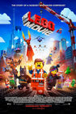
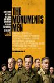

Próximos Estrenos
-

The Amazing Spider-Man
Acción,Drama,Fantasia,Ciencia Ficción
PG-13
Andrew Garfield,Emma Stone,Rhys Ifans,Denis Leary,Campbell Scott
The Amazing Spider-Man
Un joven llamado Peter Parker asiste al Instituto de Ciencias Miltdown, donde es acosado por el matón Flash Thompson y se siente atraído por la atractiva Gwen Stacy. Un día, Peter encuentra unos papeles de su padre, Richard Parker, y descubre que estuvo en Industrias Oscorp con el Dr. Curt Connors, un científico con un brazo incompleto...
-

The Lego Movie 3D
3D, Animación
PG
Chris Pratt, Will Ferrell, Morgan Freeman
The Lego Movie 3D
Un hombre común llamado Emmet (Chris Pratt) es confundido como el Maestro Constructor, el único que puede salvar el universo. Con la ayuda de un viejo místico Vitruvio (Morgan Freeman), una joven dura llamada Lucy (Elizabeth Banks) y Batman (Will Arnett), un héroe que se enfrenta constantemente al crimen, Emmet deberá luchar para derrotar al malvado tirano Señor Negocios (Will Ferrell)...
-

The Monuments Men
Acción/Aventura, Documental, Suspense/Thriller
PG-13
George Clooney, Matt Damon, Bill Murray, John Goodman, Jean Dujardin,
Bob Balaban, Hugh Bonneville, Cate Blanchett
The Monuments Men
Película basada en el libro The monuments men: allied heroes, nazi thieves and the greatest treasure hunt in history, de Robert M. Edsel, el que narra la historia del Programa de Monumentos, Arte y Archivos, un grupo aliado cuyo objetivo era rescatar obras de arte y otras piezas culturalmente importantes antes de que fuesen destruidas por Adolf Hitler durante la Segunda Guerra Mundial
-
Vampire Academy
Acción/Aventura, Sci-Fi/Fantasía
PG-13
Zoey Deutch, Lucy Fry, Danila Kozlovsky, Gabriel Byrne, Sarah Hyland
Vampire Academy
La Academia de St. Vladimir no es sólo un internado cualquiera. Es un lugar oculto dónde los vampiros son educados en los caminos de la magia y los adolescentes medio humanos entrenados para protegerlos. Rose Hathaway es una Dhampir, la guardaespaldas de su mejor amiga Lissa, una Princesa Moroi Vampira. Ambas saldrán huyendo, pero ahora van a ser arrastradas de vuelta al St. Vladimir...